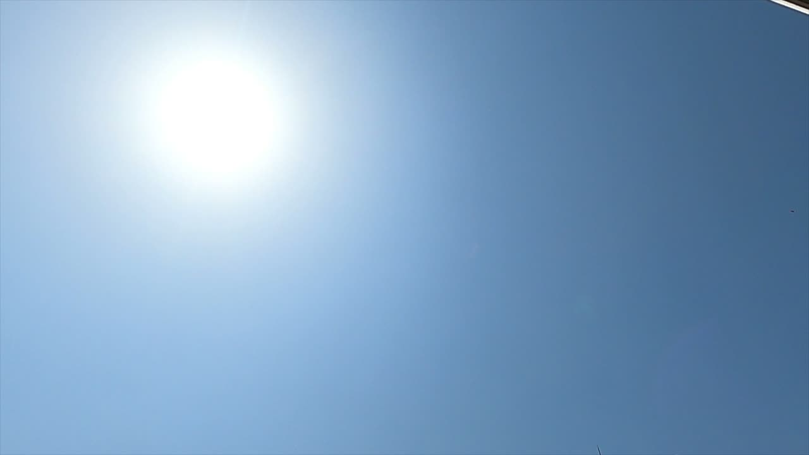
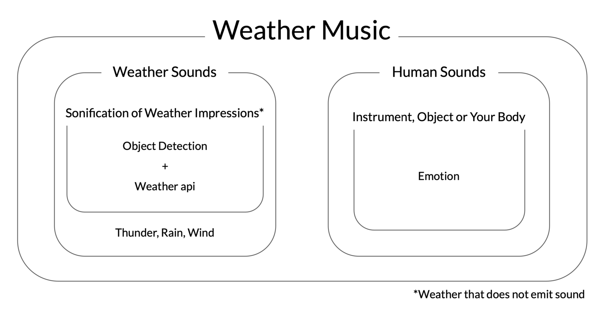
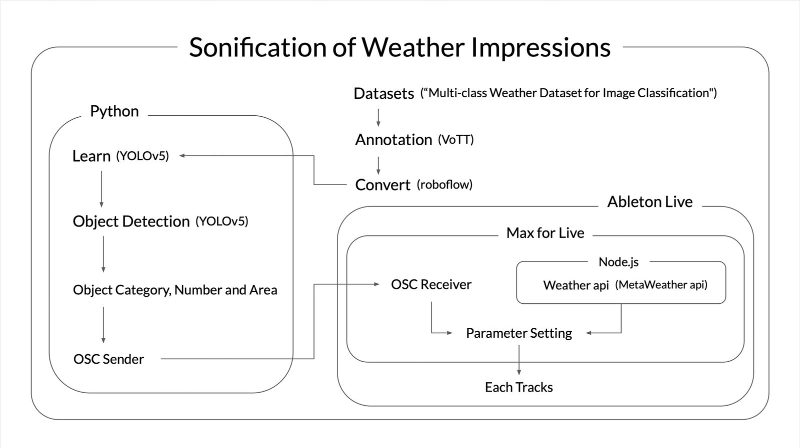

Weather Music
Project Description
This work is a musical piece in which the impressions we have of the weather are put into sound and how we feel when we listen to it is expressed through sound. There are two types: live performances and video works.
Why does the weather move us? Why do people have different impressions and feelings about the same weather? Based on these backgrounds, I wondered how the music would turn out if the relationship between weather and humans were put to sound.
In preparation, sonification of the non-sounding weather is based on scientific facts, historical background such as culture and religion, and general impressions held by people today. Based on this, make a sonification of the performer's impression of the weather. For comparison, the date and time, weather and location information, and a profile of the performer are recorded. In a live performance, the weather sound is generated in real time using object detection and weather api. The performer listens to it and expresses what they feel through sound. The video work is a compilation of the performance.
The interesting things about this work is that in the live performance, you can enjoy the combination of sounds which is generated by the impression of weather, and the movement of sounds due to unpredictable changes in weather. In the video work, you can compare and enjoy different weather music depending on the weather, season, location, and people.
In contrast to other works on the weather, this work has a clear reason and background for dealing with the weather, and the element of weather cannot be replaced. The novelty lies in the method and process of "Weather Music", which consists of the weather that emit sound, the creative sonification of the rest of the weather, and the sounds that express human emotions.
Type of submission
Option 1: “New NIME” - traditional NIME music sessions aimed at showcasing pieces performed or composed with new interfaces for musical expression.
Program Notes
Why does the weather move our hearts so much? Why do people have different impressions and feelings about the same weather? How would the relationship between the weather and human beings be expressed in sound?
The weather for me, the weather for you.
In this work, people make their impressions of the weather into sounds, and express what they feel in their hearts when they listen to the sounds. All the sounds blend together to form "Weather Music”.
Humans and the weather have had a very long relationship since ancient times, and weather has been an essential part of human life. However, compared to ancient times, we are less aware of the weather today due to the development of science and technology, safe living, food stability, and information overload. Even so, our relationship with the weather is steadily accumulating, and our impressions of it are being cultivated and updated daily. Facing the weather "now". How do modern people perceive the weather, and what do they feel about it? This is a work that consciously perceives the weather, which we used to perceive unconsciously or in a limited way, and expresses what we feel as we face the weather.
Media

▶

Figure 1


Figure 2
Ethics Statement
No money was exchanged for this work.
In the initial version of this work, I asked a friend to take video of the material for the exhibition. I also asked a friend to model the archival photos. In both cases, I explained in detail about the work and how the video and photographs would be used, and obtained their consent beforehand. In addition, before releasing them to the public as archives, I clearly informed them what kind of photos and videos would be uploaded and where, and obtained their consent before releasing them to the public. After the release, we expressed our gratitude to our friends for their cooperation, along with the completed videos and photos.
Acknowledgements
I would like to thank everyone who helped with this work.